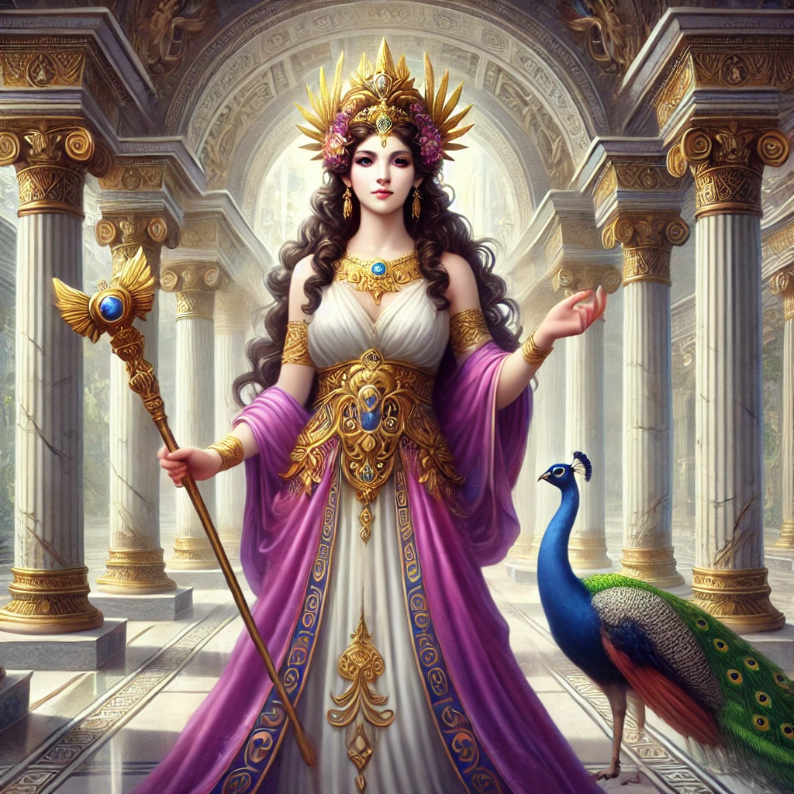
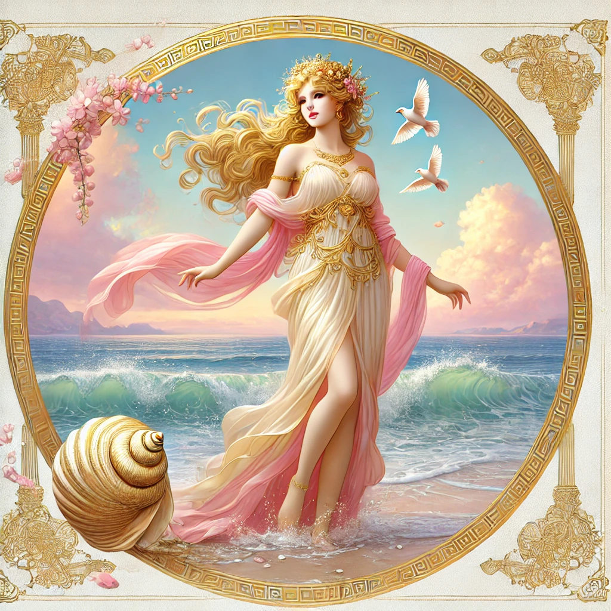
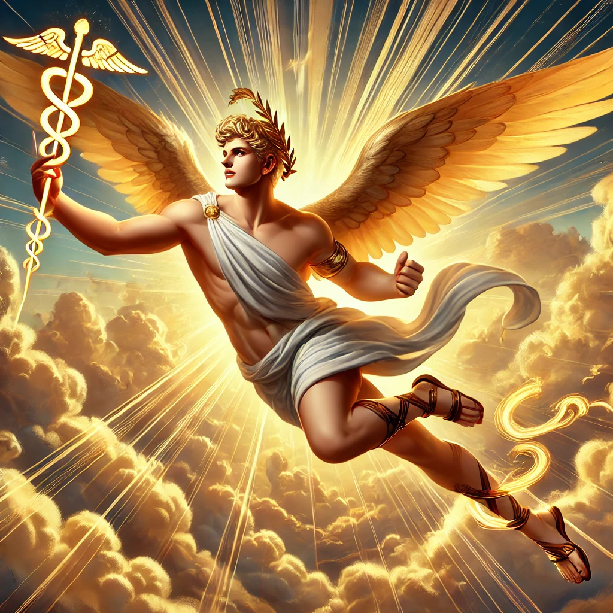

<!DOCTYPE html>
<html lang="en">
<head>
    <meta charset="UTF-8">
    <meta name="viewport" content="width=device-width, initial-scale=1.0">
    <title>Apollo - Greek Mythology with Mr. Sovocool</title>
    <style>
        body {
            font-family: Arial, sans-serif;
            margin: 0;
            padding: 0;
            background-image: url('background.webp');
            background-size: cover;
            background-attachment: fixed;
            background-position: center;
            background-repeat: no-repeat;
            color: white;
        }
        .header-banner {
            background-color: rgba(0, 0, 139, 0.8);
            width: 100%;
            text-align: center;
            padding: 20px 0;
            position: relative;
        }
        .header-banner img {
            max-width: 60%;
            height: auto;
        }
        .container {
            padding: 20px;
            background-color: rgba(0, 0, 0, 0.75);
            margin: 20px;
            border-radius: 10px;
            text-align: center;
        }
        .container h1 {
            color: yellow;
            font-size: 40px;
        }
        .container h3 {
            font-size: 22px;
            font-style: italic;
            font-weight: normal;
            color: white;
        }
        .container p {
            text-align: left;
            font-size: 20px;
            margin: 10px 0;
        }
        .container p strong {
            color: yellow;
        }
        .container p em {
            font-style: italic;
            color: white;
        }
        .god-image {
            width: 50%;
            max-width: 400px;
            border-radius: 10px;
        }
        .grid {
            display: grid;
            grid-template-columns: repeat(5, 1fr);
            gap: 20px;
            max-width: 900px;
            margin: 0 auto;
        }
        .grid a {
            text-decoration: none;
            color: white;
            font-size: 18px;
            font-weight: bold;
            display: flex;
            flex-direction: column;
            align-items: center;
            justify-content: center;
            position: relative;
            border-radius: 10px;
            overflow: hidden;
        }
        .grid img {
            width: 100%;
            height: auto;
            border-radius: 10px;
        }
        .grid span {
            position: absolute;
            bottom: 10px;
            background-color: rgba(0, 0, 0, 0.6);
            color: white;
            padding: 5px 10px;
            border-radius: 5px;
        }
    </style>
</head>
<body>
    <div class="header-banner">
        
    </div>
    <div class="container">
        <h1>Apollo</h1>
        <h3>God of the Sun, Music, Poetry, Prophecy, Healing, Archery, and Plague</h3>
        
        
<p><strong>Roman Name:</strong> <em>Apollo (same as Greek)</em></p>        
<p><strong>Parents:</strong> <em>Zeus and Leto</em></p>
        <p><strong>Spouse(s):</strong> <em>None</em></p>
        <p><strong>Siblings:</strong> <em>Artemis (twin sister)</em></p>
        <p><strong>Children:</strong> <em>Asclepius, Orpheus, Troilus, Aristaeus, Linus, and many more</em></p>
        <br>
        <p>Apollo is one of the most important and well-known gods in Greek mythology. He is the son of Zeus and the Titaness Leto, and he has a twin sister, Artemis. Apollo is known for many things, including music, poetry, healing, and prophecy. He is often shown as a young, handsome man with a lyre (a small harp) or a bow and arrow.</p>
        <p>Apollo’s most famous place of worship was the Oracle of Delphi, where a priestess called the Pythia would deliver prophecies from him. People from all over Greece visited Delphi to seek Apollo’s wisdom about the future.</p>
        <p>He was also the god of healing, but he could also bring disease and plague if angered. He was sometimes called "the far-shooter" because of his skill with a bow. Apollo was linked to the Sun, and over time, people started seeing him as the driver of the sun chariot, though this was originally the job of Helios.</p>
        <br>
      <p><strong style="color: yellow;">Notable Stories About Apollo:</strong></p>
        <ul style="text-align: left; font-size: 20px; list-style-type: none; padding-left: 40px;">
            <li><a href="#birth-on-delos" style="color: white; text-decoration: underline; font-weight: normal;">The Birth of Artemis and Apollo</a></li>
            <li><a href="#python" style="color: white; text-decoration: underline; font-weight: normal;">Apollo and the Python</a></li>
            <li><a href="#daphne" style="color: white; text-decoration: underline; font-weight: normal;">Apollo and Daphne</a></li>
            <li><a href="#hyacinthus" style="color: white; text-decoration: underline; font-weight: normal;">Apollo and Hyacinthus</a></li>
            <li><a href="#phaethon" style="color: white; text-decoration: underline; font-weight: normal;">Apollo and Phaethon</a></li>    
        </ul>
      <br>  
      <h2 id="birth-on-delos" style="color: yellow; font-weight: bold; text-align: center;">The Birth of Artemis and Apollo</h2>
        <p>Leto, a kind and gentle Titaness, was expecting twins, the children of Zeus. But Zeus’ wife, the powerful and jealous Hera, was furious. She declared that no land under the sun could offer Leto a place to give birth. Desperate and in pain, Leto wandered across the world, searching for a safe place for her children to be born.</p> <p>After a long journey, Leto found the floating island of Delos. It was a small, rocky place, drifting on the sea, not firmly connected to the earth. Because of this, it was not bound by Hera’s curse. Leto begged the island to shelter her, promising that her children would bring it great honor. Delos agreed, and the island became rooted to the ocean floor, finally still and strong.</p> <p>But Leto’s troubles were not over. Hera had forbidden Eileithyia, the goddess of childbirth, from helping Leto. Without her, Leto suffered in labor for nine long days and nights. The other goddesses took pity on her and sent Iris, the messenger of the gods, to secretly bring Eileithyia to Delos. At last, Leto was able to give birth.</p> <p>First, she brought her daughter, Artemis, into the world. The newborn goddess was strong, wise, and independent. Almost immediately, she helped her mother through the pain of childbirth. With Artemis’ aid, Leto then gave birth to her second child, Apollo. As soon as he was born, the island bloomed with golden light, and the world rejoiced.</p> <p>Apollo and Artemis were twins, but they were different in many ways. While Apollo would become the god of the sun, music, and prophecy, Artemis was destined to be the goddess of the moon, the hunt, and wild animals. Though they had different paths, they would always share a special bond as twin siblings.</p> <p>Because of their birth, Delos became one of the most sacred places in Greece. Apollo and Artemis would grow into powerful gods, each ruling over light in their own way—Apollo with the sun and prophecy, and Artemis with the moon and nature. Together, they brought balance to the world, and their mother, Leto, was honored for giving birth to two of the greatest Olympian gods.</p>

      <br>  
      <h2 id="python" style="color: yellow; font-weight: bold; text-align: center;">Apollo and the Python</h2>
        <p>After Apollo was born on the island of Delos, he grew quickly into a strong and powerful god. Even as a young deity, he wanted to prove himself and find a place to call his own. He soon heard about a great oracle at Delphi, a place where people could seek wisdom about the future. But there was one problem—Delphi was guarded by a monstrous serpent called Python.</p> <p>Python was a huge, fearsome dragon-like creature. It had been sent by Gaia, the Earth goddess, and was one of the oldest beings in the world. The serpent had slithered across the land, spreading fear and destruction. It had even chased Apollo’s mother, Leto, when she was pregnant with him. Now, it ruled over Delphi, keeping the oracle under its control.</p> <p>Apollo, filled with rage at what Python had done to his mother, decided to defeat the beast. He took his golden bow and arrows, gifts from the blacksmith god Hephaestus, and traveled to Delphi. When he arrived, he found Python curled around the sacred site, its scales glistening and its fiery eyes watching him. Without hesitation, Apollo drew his bow and let his first arrow fly.</p> <p>Python roared in anger and lunged at Apollo, but the young god was too quick. He leaped onto a high rock, shooting arrows one after another. The serpent thrashed and hissed, trying to escape, but Apollo’s aim was perfect. His final arrow struck Python’s heart, and with a mighty cry, the beast collapsed to the ground, lifeless.</p> <p>With Python defeated, Apollo claimed Delphi as his own sacred place. He established his famous Oracle there, where a priestess, known as the Pythia, would speak prophecies in his name. People from all over Greece came to seek his wisdom, and Delphi became the most important religious center in the land.</p> <p>However, Apollo had killed a sacred creature of Gaia, the Earth goddess. To make up for his actions, he had to purify himself and create the Pythian Games in honor of Python. These games, held every four years, became one of the great festivals of ancient Greece, much like the Olympic Games.</p> <p>From that day forward, Apollo was known as the god of prophecy, truth, and light. Delphi remained his most sacred temple, where the Oracle guided kings, warriors, and common people alike. And though Python was gone, the power of Apollo’s wisdom would last forever.</p>
        <br>
          <h2 id="daphne" style="color: yellow; font-weight: bold; text-align: center;">Apollo and Daphne</h2>
        <p>Apollo, the god of music, prophecy, and the sun, was known for his many loves, but one of his most famous love stories was one of heartbreak and loss. It all began when Apollo angered Eros, the mischievous god of love. One day, Apollo saw Eros playing with his bow and arrows and mocked him, saying that such a small god had no business with such a powerful weapon. Insulted, Eros decided to teach Apollo a lesson.</p> <p>Eros took two arrows—one tipped with gold and one with lead. The golden arrow caused love, while the lead one created hatred. He shot Apollo with the golden arrow, filling him with deep, passionate love for a beautiful nymph named Daphne. Then, he struck Daphne with the lead arrow, making her despise Apollo and want nothing to do with him.</p> <p>Daphne was the daughter of the river god Peneus. She was a free-spirited nymph who loved the wilderness and had no interest in love or marriage. She spent her days running through the forests, hunting and enjoying nature. But now, she found herself being chased by Apollo, who could not stop thinking about her.</p> <p>Apollo tried to speak to Daphne, praising her beauty and swearing his love, but she refused to listen. She ran as fast as she could, darting through the trees, but Apollo, being a god, was much faster. No matter how hard she tried, she could not escape him. As he reached out to touch her, she cried out to her father, the river god, for help.</p> <p>Hearing his daughter’s desperate plea, Peneus answered her prayer. Just as Apollo’s fingers brushed against her, Daphne’s body began to change. Her feet took root in the ground, her arms stretched into branches, and her soft skin hardened into rough bark. Her flowing hair transformed into green leaves, and in moments, she had become a laurel tree.</p> <p>Apollo stopped in shock, his heart breaking as he realized he would never have Daphne’s love. Gently, he touched the tree’s trunk and whispered that he would honor her forever. He declared that the laurel tree would be sacred to him, and from that day on, laurel wreaths became symbols of victory and greatness, worn by poets, athletes, and leaders in Apollo’s honor.</p> <p>Though Daphne had escaped Apollo, she would forever be remembered as his sacred tree, a symbol of both love and loss, and a reminder that not even the mighty gods could always get what they wanted.</p>
      <br>  
      <h2 id="hyacinthus" style="color: yellow; font-weight: bold; text-align: center;">Apollo and Hyacinthus</h2>
        <p>Apollo, the god of the sun, music, and prophecy, had many companions, but one of his favorites was a handsome young prince named Hyacinthus. Hyacinthus was a mortal from Sparta, known for his beauty and strength. Apollo loved him deeply, and the two spent their days together, playing music, hunting, and practicing sports.</p> <p>One bright and sunny day, Apollo and Hyacinthus were throwing a discus for fun. Apollo, wanting to impress his friend, picked up the discus and threw it high into the sky. It spun through the air, shining in the sunlight, before speeding back down toward the earth. Hyacinthus, eager to catch it, ran toward where it was going to land.</p> <p>But something terrible happened. Just as Hyacinthus reached for the discus, a powerful gust of wind changed its course. The discus struck him in the head with great force, knocking him to the ground. Apollo rushed to his side, but it was too late. The young prince lay still, his life slipping away.</p> <p>Apollo was heartbroken. He tried to use his healing powers, but even he could not save Hyacinthus. Some say that it was not just an accident—that Zephyrus, the jealous west wind, had seen Apollo and Hyacinthus together and, in envy, had blown the discus off course to cause the tragedy.</p> <p>As Hyacinthus took his last breath, Apollo refused to let his friend be forgotten. From the boy’s spilled blood, Apollo created a new flower, the hyacinth, naming it after him. Its petals were said to be marked with the letters “AI AI,” a sign of Apollo’s grief and mourning.</p> <p>Though Hyacinthus was gone, Apollo’s love for him lived on. Every year, the people of Sparta held a festival called the Hyacinthia to honor the beautiful youth and his tragic fate. And even today, the hyacinth flower blooms as a symbol of love, loss, and remembrance, forever tied to the sorrow of the sun god.</p>
      <br>  
      <h2 id="phaethon" style="color: yellow; font-weight: bold; text-align: center;">Apollo and Phaethon</h2>
        <p>Phaethon was a young boy who lived with his mother, Clymene, a mortal woman. But unlike other children, Phaethon was different—his mother told him that his father was not a man, but the mighty god Apollo, the ruler of the sun. Though Phaethon believed her, he wanted proof that he truly was the son of a god.</p> <p>One day, Phaethon traveled to Apollo’s grand palace in the sky. The palace shone with gold and precious jewels, glowing with the light of the sun itself. When Phaethon entered, Apollo welcomed him warmly. “You are my son,” Apollo said, “and I am proud of you.” But Phaethon wanted more than words. He wanted a sign to prove his divine birth to the world.</p> <p>To grant his son’s wish, Apollo swore an unbreakable oath to give him anything he desired. Excited, Phaethon made a daring request—he asked to drive Apollo’s sun chariot for a day. At once, Apollo’s face filled with worry. “That is too dangerous,” he warned. “Even the gods struggle to control my chariot. The horses are strong and wild, and the journey across the sky is filled with dangers.” But Phaethon refused to change his mind.</p> <p>Despite his fear, Apollo had made a promise, and he could not take it back. With a heavy heart, he placed the golden crown of the sun on Phaethon’s head and helped him onto the chariot. “Hold the reins tightly,” Apollo instructed. “Stay on the middle path, and do not go too high or too low.” But as soon as the fiery horses felt an unfamiliar hand guiding them, they sensed Phaethon’s weakness and bolted wildly across the sky.</p> <p>At first, Phaethon felt the thrill of adventure, but soon, he realized he had no control. The chariot flew too high, and the heat of the sun scorched the heavens. The sky darkened, and the constellations scattered in fear. Then, the chariot plunged too low, setting forests on fire and drying up rivers. Smoke filled the air, and the people of Earth cried out as their lands burned.</p> <p>Watching from Olympus, Zeus saw the disaster and knew he had to act. Before the entire world was destroyed, he hurled a powerful thunderbolt at the chariot. The blast shattered it into pieces, and Phaethon, struck by Zeus’s lightning, fell from the sky like a shooting star. He crashed into a river far below, lifeless.</p> <p>Apollo mourned his son deeply, though he had warned him of the danger. Phaethon’s sisters, the Heliades, wept for him and were eventually turned into poplar trees, their tears forming drops of amber. Though his ride ended in disaster, Phaethon’s story became a warning about the dangers of pride and recklessness, and the power of the gods.</p>
        <br>
    </div>
<br>
        <p style="text-align: center; font-weight: bold;">Click on an image below to learn more about the Olympians:</p>
        <div class="grid">
            <a href="index.html"><span>Home</span></a>
	    <a href="zeus.html"><span>Zeus</span></a>
            <a href="hera.html"><span>Hera</span></a>
            <a href="poseidon.html"><span>Poseidon</span></a>
            <a href="demeter.html"><span>Demeter</span></a>
            <a href="athena.html"><span>Athena</span></a>
            <a href="artemis.html"><span>Artemis</span></a>
            <a href="ares.html"><span>Ares</span></a>
            <a href="aphrodite.html"><span>Aphrodite</span></a>
            <a href="hephaestus.html"><span>Hephaestus</span></a>
            <a href="hermes.html"><span>Hermes</span></a>
            <a href="dionysus.html"><span>Dionysus</span></a>
            <a href="hades.html"><span>Hades</span></a>
            <a href="hestia.html"><span>Hestia</span></a>
        </div>
		<br><br>
    <p class="copyright" style="text-align: center;">&copy; 2025 Stephen Sovocool</p>
    </div>
</body>
</html>
